Гайд для старта в нейросетях: что на самом деле происходит на рынке, какие проекты заказывают и сколько они стоят, как пройти путь до первого заказа, чем текстовые нейросети отличаются от визуальных и за какие подписки платить.
Что происходит на самом деле, какие мифы мешают, какие проекты заказывают и что изменили нейросети.
Пять тезисов о том, что сейчас на самом деле происходит с профессией: как быстро пришли нейросети, что с увольнениями, какими стали проекты и кто нужен рынку.
Столько понадобилось ChatGPT, чтобы набрать первый миллион пользователей. Сейчас у него около 900 млн человек в неделю. А длина задач, которые ИИ выполняет сам, удваивается примерно каждые 4 месяца.
Только 9% компаний говорят, что ИИ действительно заменил какие-то роли. При этом к маю 2026 года 102 000 человек потеряли работу в технологических компаниях, и почти 6 из 10 компаний называют причиной ИИ, хотя причина финансовая. Сэм Альтман называет это AI washing. А Klarna, которая хвасталась, что бот заменил 700 операторов, снова нанимает людей: качество упало.
Раньше заказывали одну картинку или один формат. Теперь в одном проекте фото, графика, 3D, моушн и видео: клиент ждёт серию, адаптации под площадки и ролик — и всё это в одном стиле.
Глубоко в одном — дизайне, моушне, монтаже — и широко в смежном. Нейросети дают доступ к 3D, видео и звуку без отдельной команды, но собрать это в сильный проект может только тот, у кого есть база.
16% вакансий дизайнеров и художников на hh.ru в 2026 году требуют навыков работы с нейросетями — больше, чем в любой другой профессии.
Вывод. «Всех сокращают из-за ИИ» — часто отговорка. Нейросети не отменяют дизайнеров, они отменяют средний результат. Людей, которые умеют с ними работать, ищут активнее остальных.
Дизайнеры по-разному встречают нейросети. Почти все проходят одни и те же стадии — вопрос только в том, на какой задержаться.
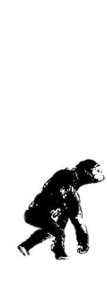
01 · ОтрицаниеHomo Skepticus«Я всё рисую руками, ИИ — это баловство»
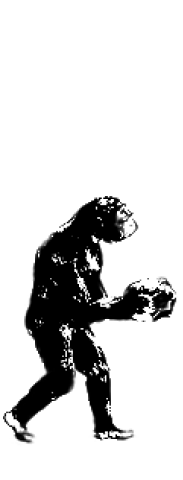
02 · ГневHomo HaterusПишет в комментариях, что нейросети — воровство и конец искусства
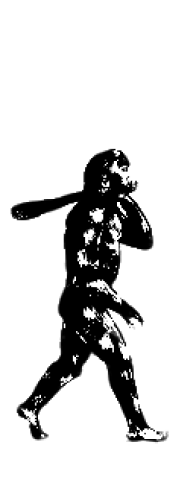
03 · ТоргHomo Figmaticus«Ладно, баннеры пусть делает, но в моей Figma — только я»
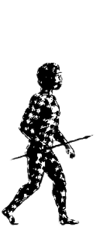
04 · ДепрессияHomo PanicusУвидел рилс «нейросеть заменит дизайнеров» и уже обновляет резюме
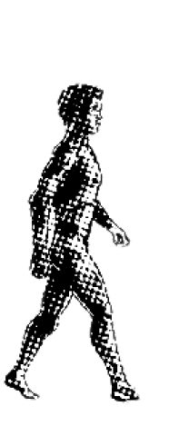
05 · ПринятиеHomo ClaudiusРаботает с нейросетями как с командой: идея и решения на нём, рутина — на ИИ
Почти каждый минус бьёт по тем, кто делает средне и не учится. Почти каждый плюс достаётся тем, кто растёт и показывает себя.
Три убеждения, с которыми многие заходят в AI-креатив, и как всё устроено на самом деле.
Из чего складывается результат
Не гоняйся за каждой новой нейросетью. Выдели на обновления час в неделю, а остальное время вкладывай в насмотренность, дизайн и работу с людьми.
Удобнее делить проекты по типу работы: фото, графика, продукты и видео. В каждой вкладке — кто заказывает, что ты сдаёшь и вилка цен на 2026 год. Внизу вилки — один кадр, один круг правок и один формат, вверху — набор кадров, адаптации и передача прав.
Кто заказывает Маркетплейсы, e-com, бренды одежды и косметики. Нужно много реалистичных кадров — быстрее и дешевле съёмки.
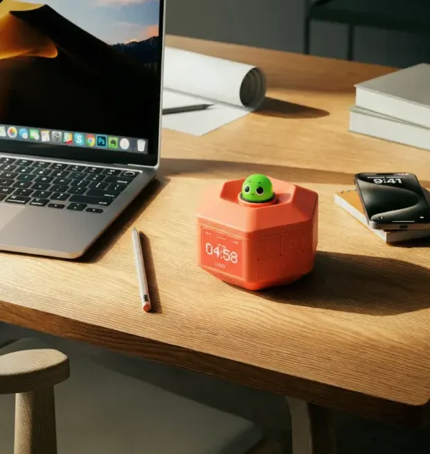
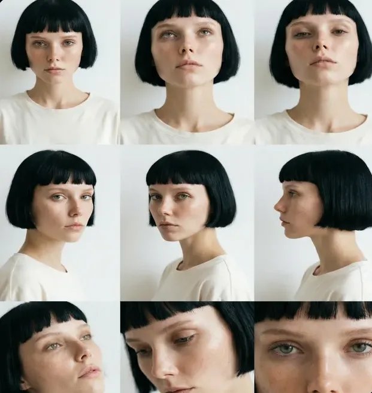
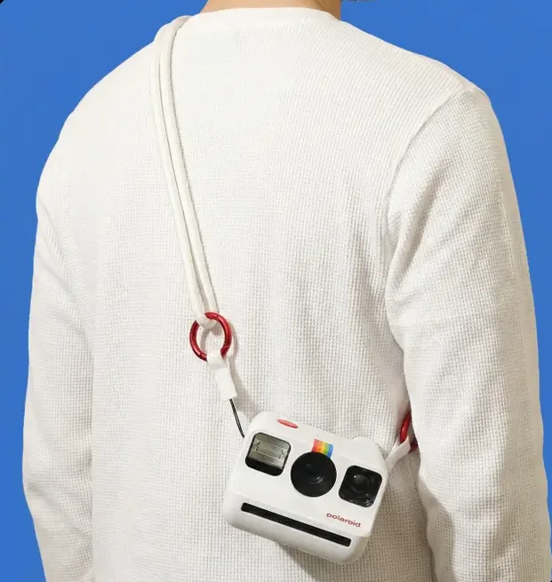
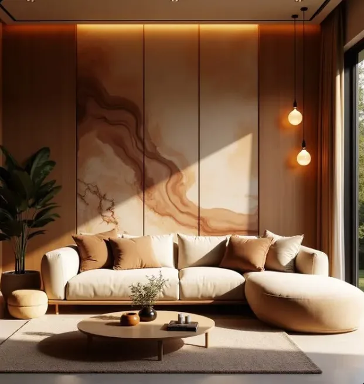
| Проект | Пример задачи | Что сдаёшь | Вилка |
|---|---|---|---|
| Предметная фотосессия | Продукт в нескольких сетах без студии | Карточка продукта, 3 hero и 3 lifestyle | 5–25 тыс ₽ |
| Фотосессия с AI-моделью | Модель бренда в разных образах и с продуктом | Карточка модели и серия кадров | 5–20 тыс ₽ |
| Фотостиль бренда | Единый стиль кадров для сайта и соцсетей | Серия кадров и правила стиля | 5–25 тыс ₽ |
| Визуализация интерьера | Пространство до ремонта или стройки | Серия ракурсов | по объёму |
Кто заказывает Бренды и агентства: кампании, запуски, айдентика. Нужен узнаваемый стиль на всех материалах, а не одна картинка.
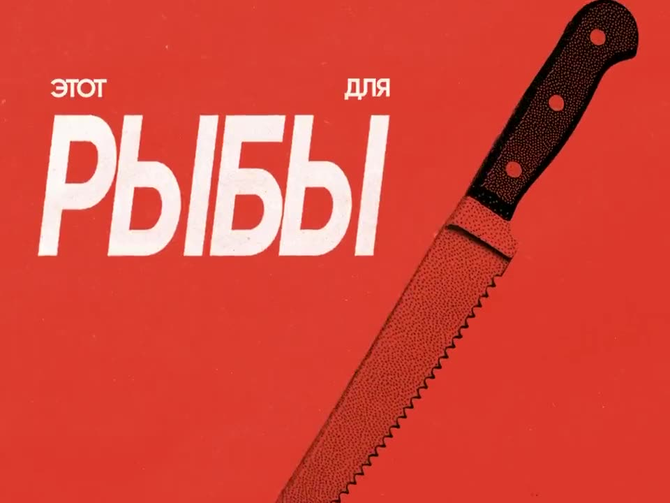
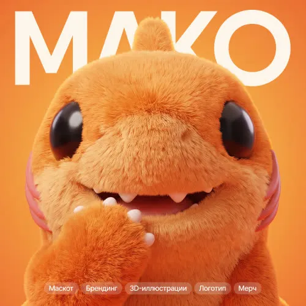
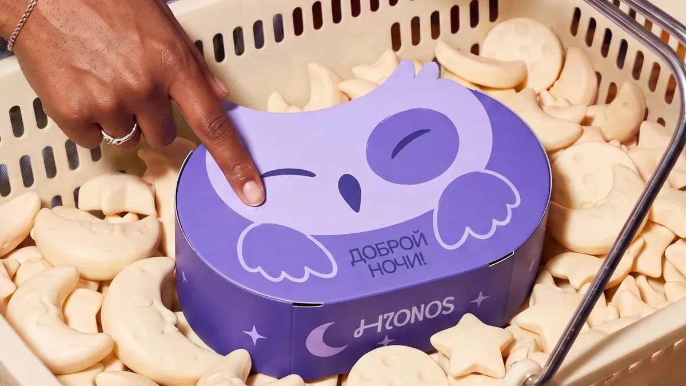
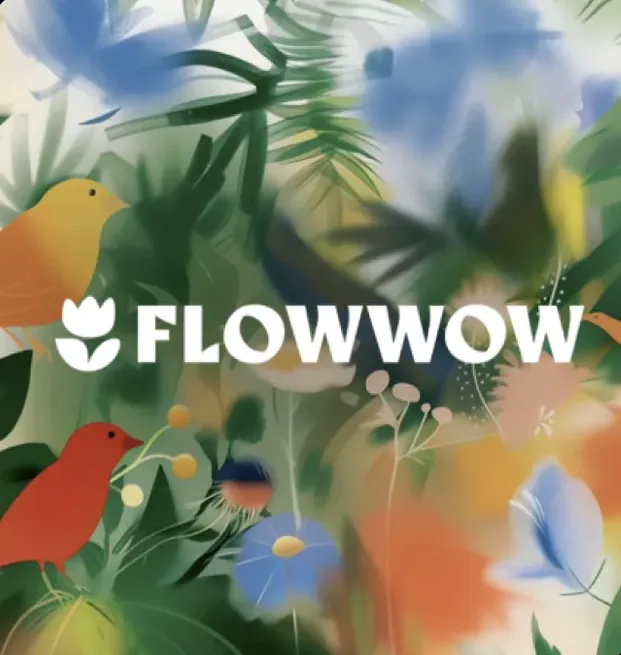
| Проект | Пример задачи | Что сдаёшь | Вилка |
|---|---|---|---|
| Key visual и адаптации | Главный образ кампании для баннеров и наружки | KV и адаптации под форматы | 5–30 тыс ₽ |
| Иллюстрации для бренда | Графический язык, набор иллюстраций | Серия из 5–15 кадров в одном стиле | 5–30 тыс ₽ |
| Маскот | Персонаж бренда в разных позах и ситуациях | Карточка персонажа и серия сцен | по объёму |
| Упаковка и айдентика | Концепт упаковки, графика бренда | Концепт, мокапы, носители | по объёму |
| Генерация концептов | Варианты визуального направления до запуска | 2–3 направления с мудбордами | 5–15 тыс ₽ |
Кто заказывает Стартапы, продуктовые команды, сайты и сервисы. Нужно показать то, чего ещё нет, или красиво упаковать продукт на экране.
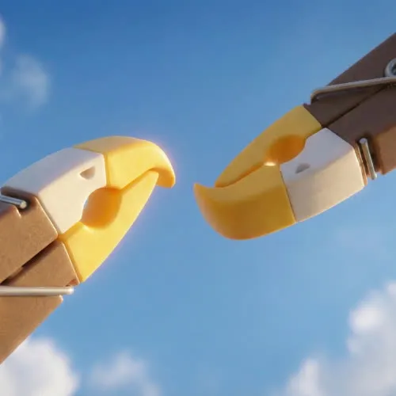
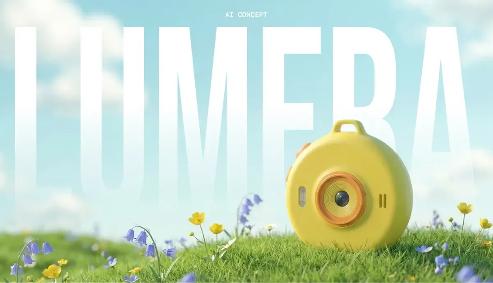
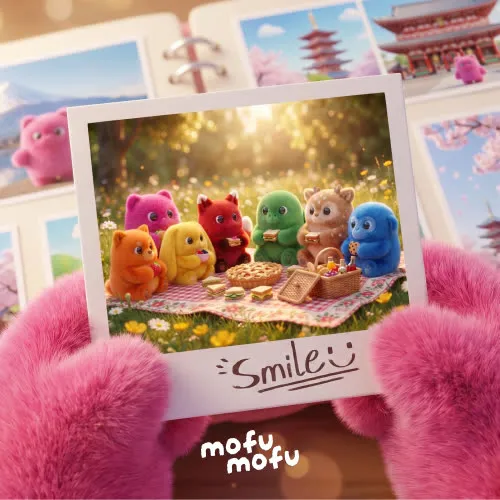
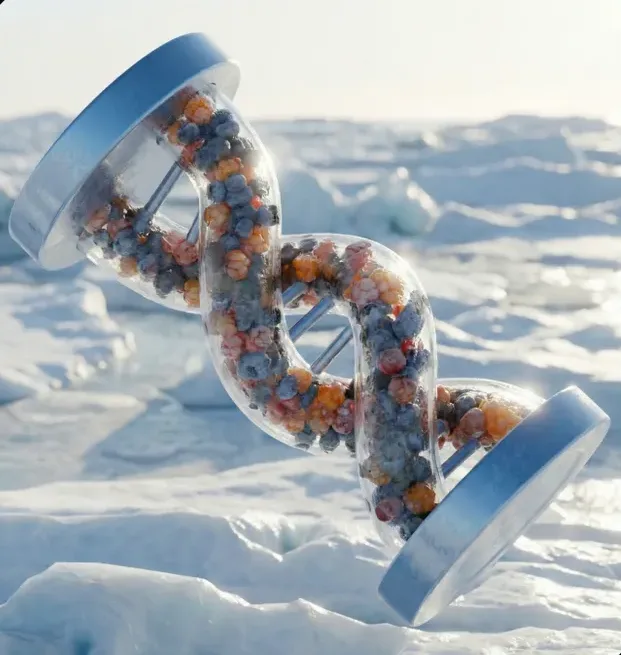
| Проект | Пример задачи | Что сдаёшь | Вилка |
|---|---|---|---|
| AI-продукт | Придумать и показать продукт, которого нет | Метафора, карточка продукта, KV, мокапы | 30–100 тыс ₽ |
| 3D-визуализация и концепты | Форма, материалы, ракурсы | Серия ракурсов и деталей | 5–30 тыс ₽ |
| Фотоконтент для сайта | Фото для лендинга без съёмки | Серия кадров в одном стиле | 5–25 тыс ₽ |
| Мокапы интерфейсов | Экраны в живой сцене для презентации | 1–5 сцен | 1–5 тыс ₽ |
Кто заказывает Бренды, медиа и артисты: ролики для рекламы, соцсетей и музыкантов.
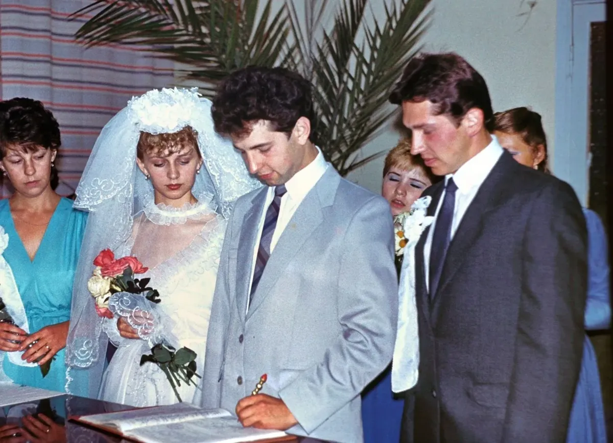
| Проект | Пример задачи | Что сдаёшь | Вилка |
|---|---|---|---|
| Рекламный ролик | Продукт через рекламный приём, пэкшот в финале | Ролик и нарезки под площадки | 30–100 тыс ₽ |
| Клип и визуалайзер | Визуальный ряд под трек артиста | Клип или визуалайзер | по объёму |
| Мультфильм и анимация персонажа | Короткая история с маскотом или героем | Ролик со звуком | по объёму |
| Объясняющий ролик | Как работает продукт или сервис, за 30–90 секунд | Ролик с графикой и озвучкой | по объёму |
| Тематический ролик | Исторический, художественный или мемный ролик на 20–60 секунд | Ролик со звуком и титрами | 5–50 тыс ₽ |
Сколько стоит час в разных проектах
Одни и те же задачи по категориям — раньше с командой и съёмкой, теперь с нейросетями. Серая полоса — сколько уходило раньше, красная — сколько сейчас.
| Задача | Раньше | С нейросетями | Разница |
|---|---|---|---|
| Фото | |||
| Предметная фотосессиякарточка, hero и lifestyle | 12–14 рабочих днейСтудия, фотограф, реквизит и ретушёр, вместе с доставкой продукта и ретушью | 10–20 часовОдин креатор, это 2–3 рабочих дня | ≈ в 5 раз быстрее |
| Графика и 3D | |||
| Серия иллюстраций5–10 кадров в одном стиле | 2–3 неделиИллюстратор рисует серию вручную: эскизы, чистовик, правки | 2–4 дняОдин креатор: стиль, генерация, отбор и доводка | ≈ в 4 раза быстрее |
| Один кадр продуктарендер против генерации | 2 часа на кадр3D-визуализатор в Blender, плюс месяцы на освоение программы | 5 минут на вариантГенерация, потом отбор и правки | ≈ в 24 раза быстрее |
| Видео | |||
| Рекламный ролик30 секунд | 6–12 недельРежиссёр, оператор, актёры, площадка и монтажёр: подготовка, 1–3 дня съёмки, постпродакшн | 20–40 часовОдин креатор, это 3–5 рабочих дней | ≈ в 10 раз быстрее |
Разница посчитана по серединам вилок, рабочий день — 8 часов.
Быстрее — не значит без работы. Если считать всю работу целиком, а не отдельные этапы, ускорение обычно в 2–5 раз. Нейросеть сжимает производство, но бриф, идея, отбор, правки и согласования с клиентом остаются. Поэтому цена считается от твоих часов и результата, а не от минут генерации.
То, что раньше делала команда из трёх человек — фотограф, дизайнер и монтажёр, — теперь делает один специалист с нейросетями.
Четыре запроса, которые встречаются почти в каждом брифе, и что из них следует для тебя.
| Клиент хочет | Почему | Что делать тебе |
|---|---|---|
| Быстрее и дешевле съёмки | Бюджеты урезаны, и нанять студию, модель и фотографа могут не все | Продавай пакеты с понятным сроком и результатом: «7 кадров за 4 дня», а не «генерация картинок» |
| Чтобы не выглядело как нейросеть | 80% россиян замечали ошибки в сгенерированных материалах, 20% жалуются брендам на некачественный ИИ-контент | Отбор и финализация — твоя главная ценность. Сдавай кадры, про которые непонятно, что это генерация |
| Результат для бизнеса | Клиент покупает продажи, узнаваемость или карточку, которая конвертирует, а не картинки | Начинай с брифа: задача, площадка, формат. В кейсе показывай, какую задачу решил |
| Спокойствие по правам | 67% россиян считают, что ИИ-контент нужно маркировать. Закон об ИИ обязывает платформы дать возможность маркировки с 1 марта 2027 | Обсуждай права и маркировку до старта и фиксируй в договоре. Маркируй, если кадр может ввести покупателя в заблуждение |
Где искать такие задачи. Выбери одно-два места — от этого зависит, что класть в портфолио.
| Где | Что делаешь | Что показать в портфолио |
|---|---|---|
| Студия, продакшн | Кадры и шоты по раскадровке арт-директора | Кадры в заданном стиле, ролики |
| Агентствореклама, SMM | KV, адаптации, креативы под кампании | KV с адаптациями, рекламный ролик |
| Фриланс | Проекты целиком: от брифа до сдачи | Кейсы с задачей, процессом и результатом |
| In-houseбренд, селлер, медиа | Контент одного бренда потоком | Предметка, карточки, наборы кадров для соцсетей |
| Свой контент | Авторские ролики, соцсети, заказы артистов | Тематические ролики, узнаваемый стиль |
Семь шагов от цели до первого оплаченного заказа.
Почти у всех уже есть профессия, и в ней ты сильнее большинства. Выбери свою: что остаётся за тобой, что отдать нейросети и с какого проекта начать.
Композиция, типографика, сетка, понимание бренда. Именно этого не хватает тем, кто пришёл в нейросети без дизайна.
Key visual и три адаптации для выдуманного бренда: KV, баннер, пост и мокапы.
Тайминг, ритм, анимация текста и сборка в After Effects. Сгенерированный шот без этого остаётся просто шотом.
Анимированный key visual или рекламный ролик на 10–20 секунд с пэкшотом в финале.
История, ритм, склейки и звук. Из десятка вариаций ты знаешь, какой кусок взять и куда поставить.
Тематический ролик на 20–60 секунд: исторический, художественный или мемный.
Структура, сетки, понимание продукта и пользователя. Тебе не нужно объяснять, где и зачем на странице картинка.
Фотоконтент или серия иллюстраций для лендинга в одном стиле.
Форма, материалы и свет. Из 3D-сцены получается точная основа, которую нейросеть потом доводит до фото.
AI-продукт: придумать и показать продукт, которого нет, — как Eaglips или Tootem.
Свет, кадр, поза и работа с моделью. Ты сразу видишь, где генерация врёт со светом.
Фотостиль бренда: карточка продукта, три hero и три lifestyle в одном мире.
Знаешь аудиторию, площадки и форматы, умеешь думать контент-планом.
Серия из 6–9 постов и двух роликов для одного бренда в едином стиле.
Нет привычек, которые надо ломать. Главное — сразу учиться на задачах, а не на случайных картинках.
Фотосессия продукта: самый быстрый вход, 10–20 часов на проект.
Как выбрать. Иди туда, где ты уже сильнее большинства. Нейросеть одинаково доступна всем, а твоя прошлая профессия — нет.
Нейросеть усиливает то, что уже есть внутри: есть вкус и идея — будет сильный результат, нет — будет среднее. Поэтому сначала база, потом сервисы.
Где учиться
Выбери один-два типа проектов из раздела 03 и опиши каждую услугу так, чтобы клиент сразу понял, что получит. Генерации — твой внутренний расход, клиенту важен результат и срок.
Крафтовый производитель лимонада перед запуском на маркетплейсе · единый фотостиль для карточки и первых постов · карточка продукта, 3 hero и 3 lifestyle, форматы 1:1 и 4:5 · 4 рабочих дня · 15–25 тыс ₽ в зависимости от числа сетов · не входят тексты, инфографика и печать
Для кого: … Задача: … Результат: … кадров / секунд, форматы … Срок: … рабочих дней Цена: … – … тыс ₽, зависит от … Не входит: …
Зачем поле «Не входит». Без него клиент уверен, что в цену входит всё: тексты, логотип, печать и ещё пять кругов правок.
Подписки подключай по мере задач. Модель можно открыть на её сайте или через агрегатор — один кабинет с общим балансом, где многие принимают российские карты.
Три бюджета в месяц
Подписки — по задачам. Платишь за инструмент, когда для него появилась задача. И не покупай «общие» аккаунты у третьих лиц: их блокируют вместе с твоими генерациями.
Один проект для одного бренда, можно выдуманного: фотосессия, AI-продукт или ролик. Порядок работы одинаковый для всех трёх.
Дешёвые черновики → дорогие финалы. Сначала отрабатывай кадр в картинке и только потом анимируй. Видео по неутверждённому кадру — самый дорогой способ узнать, что кадр плохой.
Так начинали ученики
Больше 50 наград на Dprofile собрали ученики школы — многие с первых учебных проектов, сделанных с нуля. Посмотри их кейсы, чтобы понять планку.
Кейс — это история решения, а не альбом картинок. Заказчик покупает метод, который ты повторишь на его продукте.
| Экран | Что внутри | Правило |
|---|---|---|
| Обложка | Название, подпись «AI concept» или «AI photoshoot», самый сильный кадр | Обложка решает, откроют ли кейс |
| Идея | Продукт, для кого, задача — 2–4 предложения | Идея одной фразой |
| AI-разметка | Что сделала нейросеть, что сделал ты | До процесса, а не сноской в конце |
| Процесс | Мудборд, карточка-опора, пара «до / после» | Решения, а не свалка генераций |
| Результат | Финальные кадры, адаптации, мокапы или ролик | Одна мысль — один экран, сначала лучшее |
| Контакты | Имя, Telegram, почта, «что могу сделать для вас» | Финальный экран — кнопка, а не «спасибо» |
Честно о нейросети. Плашка «AI-generated» в кейсе и договорённость с клиентом защищают и тебя, и его.
Как оформляют кейсы у нас
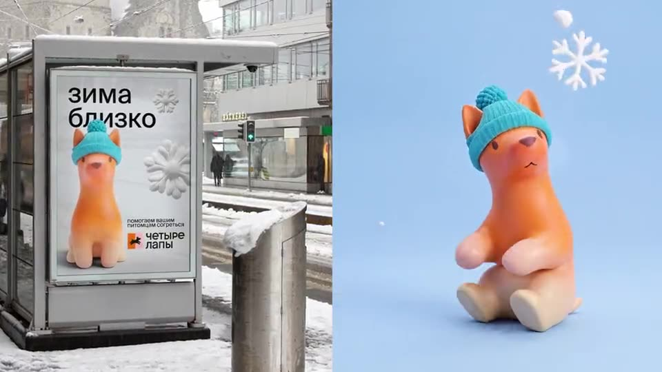
Где показывать
Цена — это границы проекта, записанные цифрой: что сдаёшь, сколько правок и где будет размещено. Поэтому цену называют после брифа.
Три пакета услуг. Что входит в «Старт», «Стандарт» и «Кампанию» для каждой услуги.
| Услуга | Старт | Стандарт | Кампания |
|---|---|---|---|
| Фотосессия с продуктом5–25 тыс ₽ | 3 кадра в одном сете, 1 круг правок | Карточка, 3 hero и 3 lifestyle, 2 круга | Стандарт + адаптации 1:1, 4:5, 9:16 и сезонный сет |
| Креативный ролик5–50 тыс ₽ | Тизер 8–10 секунд, 3–4 шота | Ролик 20–30 секунд: концепция, раскадровка, звук, титры | Ролик 30–60 секунд, нарезки и обложки |
| Генерация концептов5–15 тыс ₽ | 1 направление, 3 кадра | 2 направления по 4 кадра и мудборды | 3 направления и доработка выбранного до KV |
На «дорого» отвечает «Старт», а не скидка. Урезай объём, а не цену часа. Пакеты отличаются форматами и кругами правок, а не числом генераций — их клиент не видит. Юридические формулировки договора проверяй с юристом.
Нейросети бывают текстовые и визуальные. Одни думают и пишут, другие рисуют и оживляют — и лучше всего работают в паре.
Новички часто ждут от ChatGPT готовый key visual, а от Midjourney — идею кампании. Это разные инструменты: текстовая нейросеть — голова, визуальная — руки.
Думают и пишут. Помогают придумать идею, разобрать бриф, организовать работу и написать промпт для визуальной нейросети.
Рисуют и оживляют. Делают то, что им описали: картинку, видео, звук. Сами задачу не придумывают.
Главная связка. Текстовая нейросеть пишет точный промпт по брифу и стилю, визуальная его исполняет, а ты выбираешь лучшее и доводишь руками.
У всех есть бесплатный режим — для старта его хватает. Платная подписка даёт лимиты побольше и модели поумнее. Цены официальные, в рублях — по курсу около 83 ₽ за доллар с комиссией посредника.
| Нейросеть | В чём сильна для дизайнера | Не бери для | Сколько стоит | Карта РФ |
|---|---|---|---|---|
| Claudeот Anthropic | Длинные тексты и брифы, логика концепции, структура презентации, код и вёрстка лендинга, разбор документов и скриншотов макета | Генерации картинок — Claude не рисует | БесплатноPro $20 ≈ 1 900–2 400 ₽ | через посредника |
| ChatGPTот OpenAI | Универсал: тексты, промпты, картинки и правки прямо в чате, голосовой режим | Финальной эстетики бренда | БесплатноGo $8 ≈ 800 ₽, Plus $20 ≈ 1 900–2 400 ₽ | через посредника |
| Geminiот Google | Разбор видео и ссылок на YouTube, большие файлы, связка с Google Docs; внутри — Nano Banana для картинок | Текстов с характером и авторской интонацией | БесплатноAI Pro $20 ≈ 1 900–2 400 ₽ | через посредника |
| Grokот xAI | Свежие тренды и обсуждения из X, смелые формулировки; внутри — Grok Imagine для картинок и видео | Точных фактов без проверки | БесплатноSuperGrok Lite $10, SuperGrok $30 | через посредника |
| DeepSeekкитайская модель | Черновики текстов и идей, работает из России без VPN и бесплатно | Работы с картинками и данных клиента | Бесплатно | не нужна |
| Perplexityпоиск с ИИ | Поиск с источниками: рынок, конкуренты, референсы, цены | Креатива и длинных текстов | БесплатноPro $20 ≈ 1 900–2 400 ₽ | через посредника |
Какую брать под задачу
Если нужно без VPN и иностранной карты — Алиса AI от Яндекса и GigaChat от Сбера. Для черновиков подойдут, для дизайнерских задач заметно слабее. GigaChat бесплатный, Алиса — в подписке Яндекс Плюс.
Здесь важна роль: одна нейросеть придумывает стиль, другая держит продукт и лицо, третья оживляет кадр. Спорить, какая лучшая, — всё равно что спорить, что лучше: кисть или молоток.
| Нейросеть | Задача | Сильная сторона | Не бери для | Сколько стоит | Карта РФ |
|---|---|---|---|---|---|
| Midjourney | Придумать | Стиль, эстетика, key visual, мудборд | Точных правок, текста, сохранения продукта | Basic $10≈ 1 100 ₽ через посредника | нет |
| Nano BananaPro и 2, от Google | Сохранить и поправить | Правка по фото, сборка кадра из референсов, одно лицо и продукт во всех кадрах, мокапы | Поиска стиля с нуля | В агрегатореSyntx Basic 890 ₽ ≈ 130 картинок | через агрегатор |
| Картинки в ChatGPT | Буквы и схемы | Текст на картинке, схемы, черновики инфографики | Финальной эстетики бренда | В ChatGPT Plus $20≈ 1 900–2 400 ₽ | нет |
| Seedreamот ByteDance | Реализм | Фотореалистичные кадры, точные детали и текст | Поиска необычного стиля | В агрегатореSyntx, Higgsfield | через агрегатор |
| Нейросеть | Задача | Сильная сторона | Не бери для | Сколько стоит | Карта РФ |
|---|---|---|---|---|---|
| Seedance | Оживить: атмосфера | Несколько шотов подряд, диалог и звук, спокойное движение | Резкой физики удара и контакта | В агрегатореSyntx VIP 3 990 ₽ ≈ 19 клипов | через агрегатор |
| Kling | Оживить: физика | Удар, контакт, спорт, первый и последний кадр | Длинных атмосферных сцен с диалогом | Standard $10≈ 1 100–1 200 ₽ или в агрегаторе | через посредника |
| Veoот Google | Оживить: кино | Кинематографичное видео сразу со звуком и речью | Длинных серий кадров | В Google AI Pro$20 ≈ 1 900–2 400 ₽ или в агрегаторе | через посредника |
| Нейросеть | Задача | Сильная сторона | Не бери для | Сколько стоит | Карта РФ |
|---|---|---|---|---|---|
| Suno | Музыка | Трек под ролик по описанию жанра и настроения | Точного попадания в склейки без правок | БесплатноPro $10 ≈ 1 100 ₽ — права на трек для коммерции | через посредника |
| ElevenLabs | Голос | Озвучка, дикторский голос, перевод речи | Музыки | БесплатноStarter $5 ≈ 500 ₽ | через посредника |
| Нейросеть | Задача | Сильная сторона | Не бери для | Сколько стоит | Карта РФ |
|---|---|---|---|---|---|
| CapCut, Figma | Собрать | Монтаж ролика, вёрстка текста и логотипа поверх кадра | Генерации | Бесплатно | не нужна |
Как связать в конвейер
Версии меняются, роли остаются. Сервисы обновляются каждые пару месяцев. Запоминай, кто за что отвечает, а не номер версии.
Бесплатных режимов хватает, чтобы попробовать. Для работы на заказ — нет: водяные знаки, низкое разрешение, лимиты и часто нет прав на коммерческое использование. Клиент видит только результат, поэтому подписка — такой же рабочий инструмент, как Figma. Хорошая новость: для старта хватает одного агрегатора и одной текстовой нейросети.
К калькулятору ↓В агрегаторе платишь не за картинку, а за токены или кредиты, и каждая модель тратит их по-своему. Поэтому всё пересчитано на одинаковые условия: картинка 2K в Nano Banana Pro и видео 720p на 5 секунд в Seedance 2.5.
А. Только картинки. Сколько 2K-картинок в Nano Banana Pro даёт план за месяц. Считаются все генерации, включая неудачные. Обычно нужно 60–100 картинок в месяц.
| План | Цена в месяц | Картинок | ₽ за картинку | Карта РФ | Заметка |
|---|
Вывод. На Nano Banana Pro выгоднее всего Syntx: около 7 ₽ за картинку на Basic, которого хватает на 60–100 картинок в месяц, и около 5 ₽ на Pro. На Nano Banana 2 выгоднее GIVON: около 3,7 ₽ против 7,5 ₽ у Syntx. Utopy дороже везде. У Higgsfield хорошие модели, но нужна зарубежная карта.
Б. Картинки и видео. Видео тратит в разы больше токенов, чем картинка. Колонка «80 картинок + 15 клипов» показывает, хватит ли плана на типичный месяц работы с роликами.
| План | Цена в месяц | Картинок | Клипов | 80 картинок + 15 клипов | Карта РФ | Заметка |
|---|
«Картинок» и «Клипов» — сколько даёт план, если тратить его только на картинки или только на клипы.
Вывод. Самый дешёвый вариант — Phygital+ Старт с докупкой, около 1 850 ₽, но модели там слабее. На Seedance 2.5 в 720p почти поровну выходят Syntx VIP (3 990 ₽) и GIVON Creator с докупкой (около 4 200 ₽). На Seedance 2.0 хватит Syntx Pro (1 690 ₽). В Full HD GIVON выгоднее Syntx примерно на 25%.
Выбор сервиса часто решает именно оплата. Годовой тариф платится сразу за 12 месяцев и в пересчёте на месяц стоит на 15–20% дешевле, но выгоден, только если ты будешь пользоваться сервисом не меньше 10 месяцев из 12.
| Сервис | Оплата | Что учесть |
|---|
Перед оплатой. Проверь реальную стоимость токенов на нужную модель в бесплатном аккаунте. Автопродление есть у большинства сервисов — если платить дальше не собираешься, отключи его в кабинете до следующего списания.
| План | В месяц, помесячно | В месяц, при оплате за год | Экономия | Платишь сразу |
|---|
У годовых планов Utopy и Syntx весь пакет токенов выдаётся сразу. У Higgsfield кредиты годового плана обновляются каждые 30 дней и не копятся.
Правило. Первые 1–2 месяца плати помесячно. Если сервис вошёл в работу и ты точно будешь им пользоваться почти весь год — переходи на годовой.
Выбери, сколько картинок и клипов нужно в месяц и чем платишь. Калькулятор покажет подходящие месячные планы от дешёвых к дорогим. Если плана немного не хватает, показываем цену с докупкой токенов.
| План | Цена в месяц | Уйдёт плана | Хватит? | Заметка |
|---|
Пять выводов, на которых держится всё остальное.
Правила ещё пишутся, а большинство специалистов только разбираются, как работать с нейросетями. Сильных людей мало, и рынок их активно ищет.
Глубоко в своём — дизайне, моушне, монтаже — и широко в смежном. Нейросети дают ширину, база даёт глубину.
Среднее ничего не стоит: нейросеть подтягивает до среднего всех. Платят за идею, вкус и смелое решение.
Понимать задачу, договариваться о сроках и правках, сдавать вовремя. На это почти никто не делает ставку — и зря.
Показывай работы и процесс. Заказчик выбирает того, кого видит и кому доверяет, а выделиться через блог сейчас проще, чем когда-либо.
На прямом эфире покажем, как мы работаем с нейросетями: идеи и решения на нас, рутина на ИИ. Ответим на вопросы и разберём, что дизайнеру нужно уметь в 2027 году. Анонс — в нашем Telegram-канале.
Telegram-канал ↗Бесплатные гайды школы